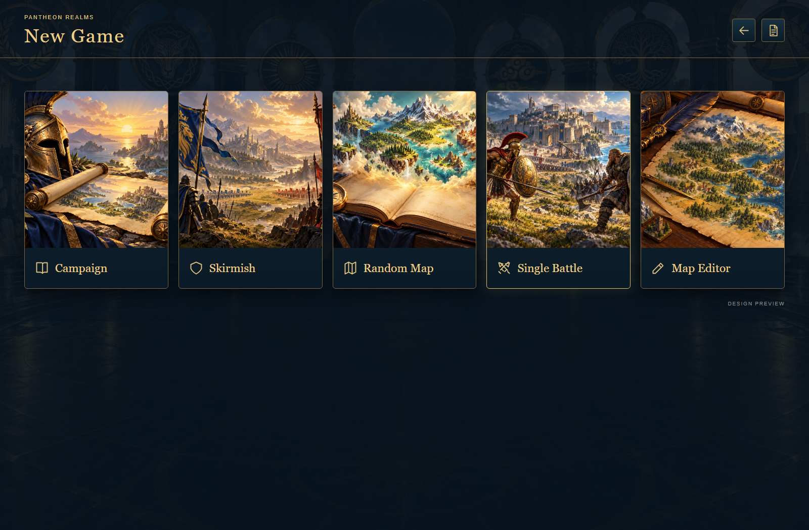
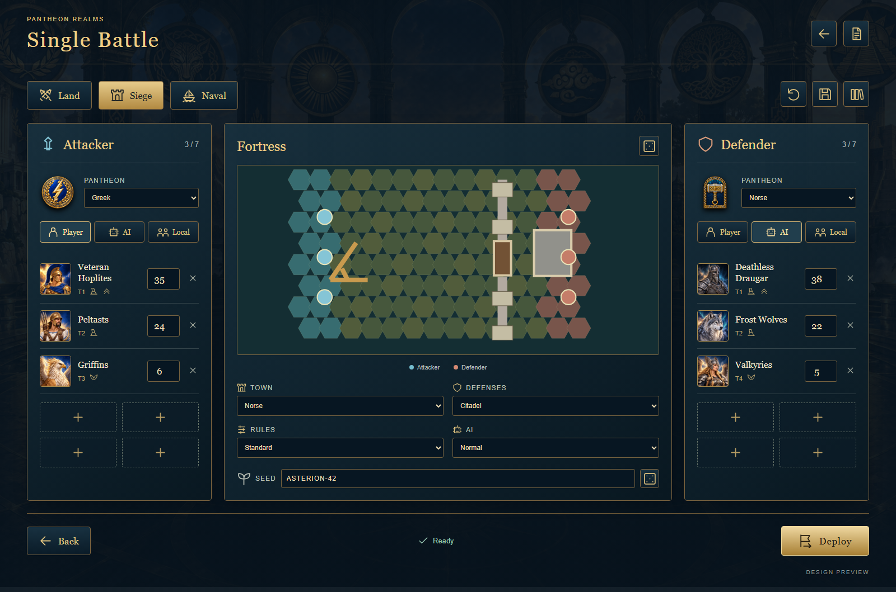
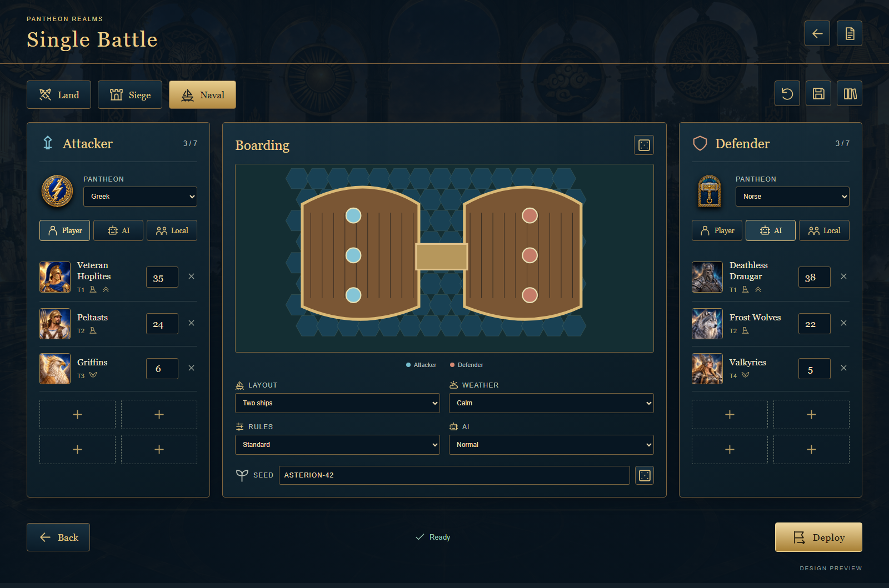

Click Single Battle in New Game to open setup immediately. Choose a battle type, build both armies, configure the battlefield, deploy, and fight using the existing combat engine. No badge, introductory step or extra setup button. The mode ends with results and offers Rematch, Edit setup, Save preset, or New battle.
Open clickable setup previews · New Game picture · Land setup · Siege setup · Naval setup
| Area | Required behavior |
|---|---|
| Land | All supported land archetypes; obstacle placement; seven stacks per side; large footprints; flight, ranged lines, creature abilities, morale and luck. |
| Sieges | All six town themes; fortification levels; intact/damaged/destroyed initial structures; gates, walls, keep, moat and towers supported by the current rules; attacker catapult; town garrison selection without a defending hero. Direct structure targeting and automatic empty-target skip. |
| Naval boarding | Two ships with deck cells and boarding bridge; faction visuals; embarked creature armies; bridge congestion and large-footprint validation; flight across water; current harpoon/boarding actions where supported. |
| Sea encounters | Single deck against a legal roster of sea creatures; water and deck deployment masks; swimming and flight restrictions; monster movement and attacks on crew; supported sea conditions. Ships follow the existing tactical model; free-moving fleet combat would be a separate expansion. |
| Control | Player vs AI, two local players and AI vs AI observation in this standalone mode. Reuse existing AI legality checks. Preserve the campaign's manual-combat policy. |
| Rules | Standard defaults and an explicit Custom setting for mixed rosters, edited creature quantities and structure states. No claim of competitive balance from an uncalibrated army-value score. |
| Persistence | Local preset library, JSON import/export, deterministic seed, combat save/resume, restart and result history. Clearly distinguish a setup preset from an in-progress save. |
The existing packages/rules/src/systems/battle/factory.ts starts battles from adventure encounters, and the session owns campaign/adventure outcomes. Separate the reusable combat construction from those encounter and reward assumptions.
SingleBattleSpec with schema version, content version, ID/name, seed, battle kind, both side definitions, terrain/deployment and siege/naval configuration. Keep authoring state distinct from runtime battle state.createSingleBattle with null commanders and neutral commander bonuses on both sides. Prefer an explicit standalone context over fake towns, mission flags or invented adventure paths. Existing encounter callers retain current behavior.packages/session. Reuse battle commands/events, initiative, AI and presentation. Do not apply adventure movement, town capture, campaign objectives or experience carryover when a standalone battle ends.Setup.tsx; create a setup screen and creature picker; reuse creature portraits and faction emblems. Remove hero/loadout drawers entirely. Reuse Battle.tsx through a session-facing adapter rather than duplicating its controls.Planning estimate: 18–28 focused development days for one developer with existing assets and rules, plus any newly requested combat systems. These are effort estimates, not a delivery commitment. Each phase leaves a testable build.
| Phase | Effort | Deliverable and acceptance gate |
|---|---|---|
| 1 · Contracts and isolation | 2–3 days | Spec/schema, validation, factory seam and standalone session. Headless land battle completes without adventure effects; campaign regression tests pass. |
| 2 · Land vertical slice | 4–5 days | New Game entry, both armies, creature picker, board selection, deployment, AI/hot-seat, result and rematch. A player can complete a battle without console tooling. |
| 3 · Siege | 3–4 days | Town theme, fortification, structure state, defender garrison, catapult and legal deployment. All fortification levels across six themes playable; no-target engine turn never blocks. |
| 4 · Naval | 3–5 days | Two-ship boarding and one-ship sea encounters; correct masks, bridges, large units and monster restrictions. No unit can accidentally stand on an illegal water/deck cell. |
| 5 · Full editor and library | 3–5 days | Terrain/obstacle editing, undo/redo, legal manual placement, presets, import/export, save/resume and replays. Invalid documents fail with specific guidance and no state mutation. |
| 6 · Polish and release | 3–6 days | Keyboard/controller focus as applicable, scaling, reduced motion, performance, help, installer. Packaged desktop smoke test covers all four encounter types and every exit path. |
Keep the game's navy stone, antique gold and illustrated portraits. The new menu artwork combines a land confrontation, fortress and catapult, and ships with a sea creature. The setup uses a stable three-column composition: attacker, battlefield/rules, defender. There are no heroes. Creature portraits, tier and movement icons, quantity boxes and empty stack slots carry most of the information. Land, siege and naval tabs have distinct icons; reset, save and library use icon buttons with tooltips. The primary action is simply “Deploy”. Advanced settings live in drawers. Proposed previews use illustrative board geometry; implementation must render the exact engine geometry and actual content names.



single-battle-card.png was generated with the built-in image generation tool for this proposal. All other illustrations in the mockups come from the repository. UI, text, layout and schematic boards were authored in HTML/CSS/SVG.
Use case: illustration-story. Create a polished landscape 3:2 game menu card illustration for 'Single Battle' in Pantheon Realms, a mythological turn-based strategy game. Painterly illustrated fantasy realism, rich deep navy shadows, antique gold and warm sunlight, detailed readable silhouettes, matching ornate classical strategy-game artwork. A Greek bronze-armored hero with a round shield and a Norse warrior face each other across a sunlit grassy battlefield in the foreground, small opposing formations behind them. Mid-background a beautiful fortified ancient city with a stone gate and a wooden catapult, far right a blue harbor with two ancient warships and a distant sea serpent, implying land, siege and naval battles in a single coherent coastal landscape. Dramatic clouds, noble heroic atmosphere, no gore. Important: this is ONLY the usable landscape artwork, no text, no letters, no logos, no buttons, no borders, no UI. Keep key characters and landmarks readable at small card size, centered safe area; do not make a collage or split panels.